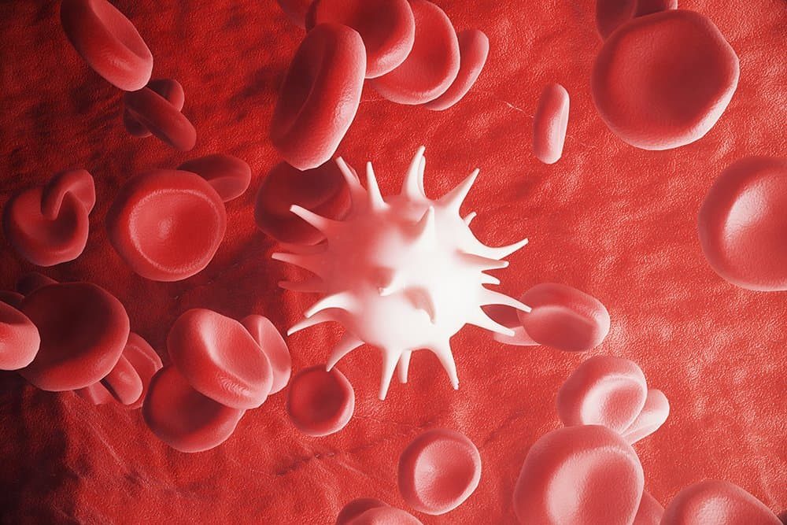

Bone marrow transplantation or hematopoietic stem cell transplantation is one of the most important types of treatment for our wards. The scope of this method is constantly expanding, and the technology of transplantation is constantly being improved. Bone marrow is the spongy, fatty tissue inside our bones. It creates the following parts of the blood:
Red blood cells, carrying oxygen and nutrients throughout the bodyWhite blood cells, which fight infection and help you recover

Platelets, which are responsible for the formation of clots
About us
Recovery Clinic is one of the largest and well-equipped clinics in London. It is included in the rating of the best hospitals in the UK in 2019 according to the authoritative magazine Modern Oncology. Over 20 bone marrow transplants are performed here monthly, which exceeds the plan from the Ministry of Health by three times.
The clinic works closely with research institutes, patients have the opportunity to participate in medical research and receive treatment according to the latest protocols. Thanks to this, even the most severe forms of blood diseases are successfully treated in the oncohematology department.
We have:
The best equipment.
68 medical departments.
Hundreds of experienced doctors.
Modern laboratories.
60+
Years of experience
20+
Transplantations per month
19,000+
Patients saved
94%
Of patients recommend us
It's Not Just Our Team. It's Your Team
You won't feel loneliness on your way to recovery. No matter the stage, you always have a dedicated and confident transplant team around you, providing knowledge, support, and compassion every day.
Physicians
Board-certified, highly-skilled and confident, the doctors and surgeons are with you, from the first consultation to the end of treatment.
Nurses
All of your nurses are registered and certified in transplantation to provide all the necessary procedures to help you recover.
Social Workers
A single-hearted social worker is always here to connect you and your beloved with helpful resources and support network.
Dietitians
Your personal nutritionist works with you to choose a diet during treatment and during the recovery period after a complex operation.
Financial Coordinators
The coordinator takes up all financial issues, from the coverage questions, to understanding the total costs of the recovery plan.
Care Coordinators
From getting you started to helping you through the recovery, your care coordinators are always at your disposal.
Conditions We Treat
The bone marrow transplantation is effective in these cases:
Ewing’s Sarcoma
Ewing's sarcoma is a malignant tumor that usually affects the bones. Among malignant bone tumors in children, it takes the second place after osteosarcoma in the frequency of occurrence. Most often, it occurs in long tubular bones (such as the femur, tibia, fibula, humerus), as well as in the pelvic bones, ribs, vertebrae, shoulder blades, etc. Damage to flat bones, such as the pelvic bones, ribs, or shoulder blades, is much more common with Ewing's sarcoma than with osteosarcoma. From the primary bone lesion, the tumor quickly spreads to the surrounding soft tissues, including muscles and tendons.
Immunodeficiencies
Immunodeficiency is associated with the loss of one or several components of the immune system or non-specific factors that are in close interaction with it. Primary immunodeficiency is a congenital disorder caused by genetic disorders or a negative effect on the fetus during its intrauterine development. Secondary immunodeficiencies occur in representatives of various age groups against the background of diseases or the negative effects of external factors. This type can be found much more often than the first one.
Myelodysplastic Syndromes
Myelodysplastic syndromes (MDS) are a group of diseases that are characterized by impaired hematopoiesis of the myeloid line. As a result of these disorders, the possibility of producing mature blood cells is partially preserved, but there is a deficit of one or another of their species, while the cells themselves are altered and function poorly. A large percentage of patients with MDS suffer from acute myeloid leukemia after a certain period of time, usually from several months to several years. In everyday life, MDS is sometimes called "preleukemia".
Sickle-Cell Anemia
Sickle cell anemia is a hereditary genetic anomaly in the structure of hemoglobin (an oxygen-transporting protein contained in red blood cells), characterized by the presence of sickle-shaped red blood cells (in the form of a crescent) and chronic anemia caused by excessive destruction of pathological red blood cells. Such patients always have anemia, and sometimes jaundice. Sickle cells are fragile and easily destroyed. They are inelastic, so they can hardly pass through the smallest blood vessels (capillaries), obstructing blood flow and reducing the amount of oxygen delivered.
Leukemia
Leukemia is an oncological disease in which bone marrow cells mutate, not developing into normal mature white blood cells, but becoming cancer cells. Leukemia differs from other types of cancer in that it does not form a tumor in any one place, and cancer cells are present in the blood and bone marrow, sometimes also in the lymph nodes, spleen and other places in the body. It is not a hereditary disease, however, it can sometimes be diagnosed in representatives of several generations of the same family. In some hereditary or congenital diseases, the mechanism of restoration of genetic material is impaired, and the risk of acute leukemia is significantly increased.
With successful bone marrow engraftment, the chances of a full life without disease recurrence are very high, especially if the BMT was performed on a child.
Head Physician Anthony Perkins
Get a Free Consultation
Get a Free Consultation
Meet Our Bone Marrow Transplant Team
We care about your health. Our clinic consists of real professionals in their field.
Antony Perkins
Head Physician | 15 years of experience
Jane Ellis
Oncohematologist | 8 years of experience
Tomas Abbar
Surgeon | 12 years of experience
FAQ
Everything you could want to know about bone marrow transplantation. If you still have any questions, you can sign up for a free consultation with an experienced doctor.
Why is a bone marrow transplant needed?
Bone marrow is a vital organ. It produces blood cells, without which the body cannot exist. Therefore, if the organ is broken, bone marrow transplantation (BMT) is required.
Is a bone marrow transplant a surgery?
No, the bone marrow injection procedure is less traumatic and is performed not in the operating room, but in the ward.For the donor, the bone marrow harvesting process is also not an operation, since part of the hematopoietic cells from venous blood is taken from him (in most cases).
Are there any contraindications?
Doctors do not transplant if:
1) The patient has serious impaired liver and/or kidney function, and the risk of not having to undergo the procedure is high.2) The disease, due to which BMT is needed, is progressing, and the body does not respond to treatment according to any protocols.
Who can be a donor?
A bone marrow donor can be:
- the patient himself (in certain diseases, for example, multiple myeloma);
- his brothers and sisters;- other relatives whose bone marrow is compatible with the patient’s immune system;
- compatible donors from national and international registries.
What are the types of bone marrow transplantation and how do they differ?
In case of an autologous transplant, the patient is injected his own, pre-selected and frozen, hematopoietic cells. During an allogeneic transplant, hematopoietic cells are injected from a compatible donor, relative or not.
What diseases are indicated for BMT?
● Acute myelogenous leukemia (AML)
● Acute lymphocytic leukemia (ALL)
● Myelodysplastic syndrome (MDS)
● Multiple myeloma (MM)
● Non-Hodgkin's lymphoma (NHL), low and high grade
● Myeloproliferative diseases
● Chronic lymphocytic leukemia (CLL)
● Hodgkin's Lymphoma
● Weight dysplastic anemia
How safe is the procedure??
For donor
A transplant for a donor is safe because it takes only 2-5% of the bone marrow volume, and within a month it is completely restored. A few days after the procedure, the donor may feel weak and dizzy.
>
For patient
Before BMT, the patient undergoes chemotherapy, which destroys his bone marrow. Because of this, hematopoietic processes in the body stop, and may occur:- infection - due to an insufficient number of white blood cells;- bleeding - there are not enough platelets in the blood to stop it;- hypoxia (oxygen starvation) due to a reduced number of red blood cells. The result is nausea and weakness.Complications after transplantation include rejection of someone else’s bone marrow or graft versus host reaction, and GVHR is a condition in which T-cells of a transplanted organ begin to attack body cells, recognizing them as foreign cells.That is why careful selection of a donor and proper preparation for the procedure are important.
What examination should be done?
Screening before transplantation includes:
- General and biochemical blood tests. With their help, the doctor identifies malfunctions in the liver and kidneys.
- CT, MRI or PET-CT (positron emission computed tomography), which allow to evaluate the patient's condition and identify the presence of distant sites of the disease.
- HLA typing (in case of the allogeneic transplantation).
How to define that the transplant is successful?
2-3 weeks after transplantation, we can evaluate the degree of engraftment by a blood test - the bone marrow begins to produce blood cells, and their number increases.
If my relative has the same blood type, can he be my donor?
The genetic compatibility of the donor and the recipient is determined based on HLA typing. HLA are protein molecules that are sensitive to foreign cells. They recognize "outsiders" and trigger the body's immune response to infections and malignant tumors. Donor bone marrow engraftment is possible only when the HLA of the donor and the recipient are as compatible as possible.
Contacts
Fill out the form to pre-register for a free consultation with our hematologist or ask any question.
 In case of emergency, you can always get in touch with your coordinator or therapist.
In case of emergency, you can always get in touch with your coordinator or therapist. We are located in the center of London and welcome patients from all over the world.
We are located in the center of London and welcome patients from all over the world.


 Ewing's sarcoma is a malignant tumor that usually affects the bones. Among malignant bone tumors in children, it takes the second place after osteosarcoma in the frequency of occurrence. Most often, it occurs in long tubular bones (such as the femur, tibia, fibula, humerus), as well as in the pelvic bones, ribs, vertebrae, shoulder blades, etc. Damage to flat bones, such as the pelvic bones, ribs, or shoulder blades, is much more common with Ewing's sarcoma than with osteosarcoma. From the primary bone lesion, the tumor quickly spreads to the surrounding soft tissues, including muscles and tendons.
Ewing's sarcoma is a malignant tumor that usually affects the bones. Among malignant bone tumors in children, it takes the second place after osteosarcoma in the frequency of occurrence. Most often, it occurs in long tubular bones (such as the femur, tibia, fibula, humerus), as well as in the pelvic bones, ribs, vertebrae, shoulder blades, etc. Damage to flat bones, such as the pelvic bones, ribs, or shoulder blades, is much more common with Ewing's sarcoma than with osteosarcoma. From the primary bone lesion, the tumor quickly spreads to the surrounding soft tissues, including muscles and tendons. Immunodeficiency is associated with the loss of one or several components of the immune system or non-specific factors that are in close interaction with it. Primary immunodeficiency is a congenital disorder caused by genetic disorders or a negative effect on the fetus during its intrauterine development. Secondary immunodeficiencies occur in representatives of various age groups against the background of diseases or the negative effects of external factors. This type can be found much more often than the first one.
Immunodeficiency is associated with the loss of one or several components of the immune system or non-specific factors that are in close interaction with it. Primary immunodeficiency is a congenital disorder caused by genetic disorders or a negative effect on the fetus during its intrauterine development. Secondary immunodeficiencies occur in representatives of various age groups against the background of diseases or the negative effects of external factors. This type can be found much more often than the first one. Sickle cell anemia is a hereditary genetic anomaly in the structure of hemoglobin (an oxygen-transporting protein contained in red blood cells), characterized by the presence of sickle-shaped red blood cells (in the form of a crescent) and chronic anemia caused by excessive destruction of pathological red blood cells. Such patients always have anemia, and sometimes jaundice. Sickle cells are fragile and easily destroyed. They are inelastic, so they can hardly pass through the smallest blood vessels (capillaries), obstructing blood flow and reducing the amount of oxygen delivered.
Sickle cell anemia is a hereditary genetic anomaly in the structure of hemoglobin (an oxygen-transporting protein contained in red blood cells), characterized by the presence of sickle-shaped red blood cells (in the form of a crescent) and chronic anemia caused by excessive destruction of pathological red blood cells. Such patients always have anemia, and sometimes jaundice. Sickle cells are fragile and easily destroyed. They are inelastic, so they can hardly pass through the smallest blood vessels (capillaries), obstructing blood flow and reducing the amount of oxygen delivered. Leukemia is an oncological disease in which bone marrow cells mutate, not developing into normal mature white blood cells, but becoming cancer cells. Leukemia differs from other types of cancer in that it does not form a tumor in any one place, and cancer cells are present in the blood and bone marrow, sometimes also in the lymph nodes, spleen and other places in the body. It is not a hereditary disease, however, it can sometimes be diagnosed in representatives of several generations of the same family. In some hereditary or congenital diseases, the mechanism of restoration of genetic material is impaired, and the risk of acute leukemia is significantly increased.
Leukemia is an oncological disease in which bone marrow cells mutate, not developing into normal mature white blood cells, but becoming cancer cells. Leukemia differs from other types of cancer in that it does not form a tumor in any one place, and cancer cells are present in the blood and bone marrow, sometimes also in the lymph nodes, spleen and other places in the body. It is not a hereditary disease, however, it can sometimes be diagnosed in representatives of several generations of the same family. In some hereditary or congenital diseases, the mechanism of restoration of genetic material is impaired, and the risk of acute leukemia is significantly increased.